Results
Held-out performance, reliability, five-fold stability, and biological error analysis. Every value and figure below comes from the repository.
Held-out model comparison
| Task / model | Accuracy | Macro F1 | MCC | AUROC | AUPRC |
|---|---|---|---|---|---|
| Binary CNN | 0.7985 | 0.7980 | 0.5970 | 0.8640 | 0.8558 |
| Binary 5-mer random forest | 0.8084 | 0.8077 | 0.6171 | 0.8756 | 0.8700 |
| Binary hybrid | 0.7840 | 0.7840 | 0.5682 | 0.8533 | 0.8592 |
| Selected sigma CNN | 0.4528 | 0.3228 | 0.1909 | 0.7077* | 0.2973* |
| Sigma 3-mer SVM | 0.4631 | 0.3099 | 0.1916 | 0.7095* | 0.3128* |
| Sigma hybrid | 0.5729 | 0.2397 | 0.1652 | 0.6843* | 0.2875* |
* Macro one-vs-rest. Higher sigma hybrid accuracy does not translate into balanced class performance.
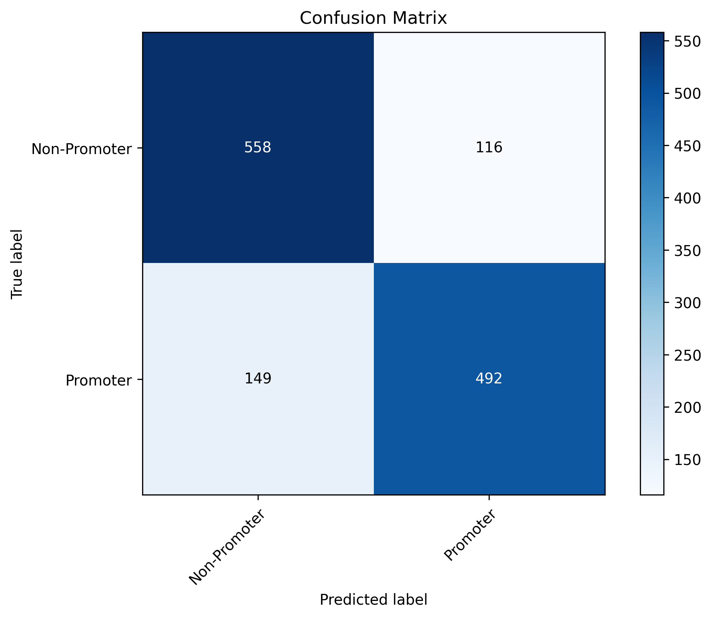
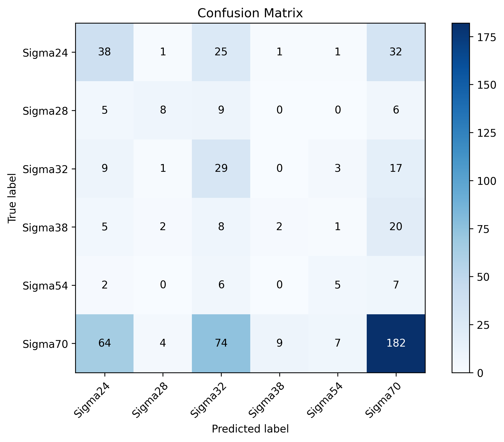
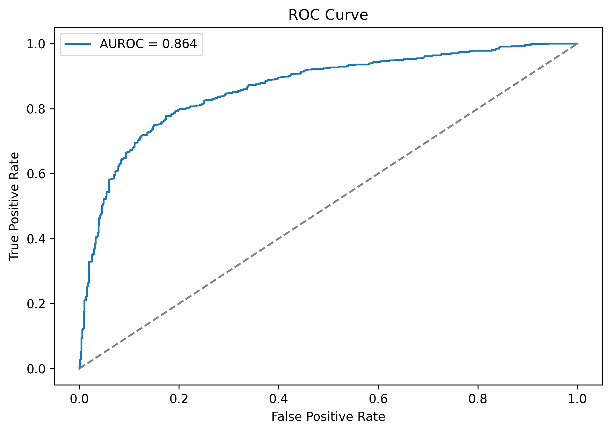
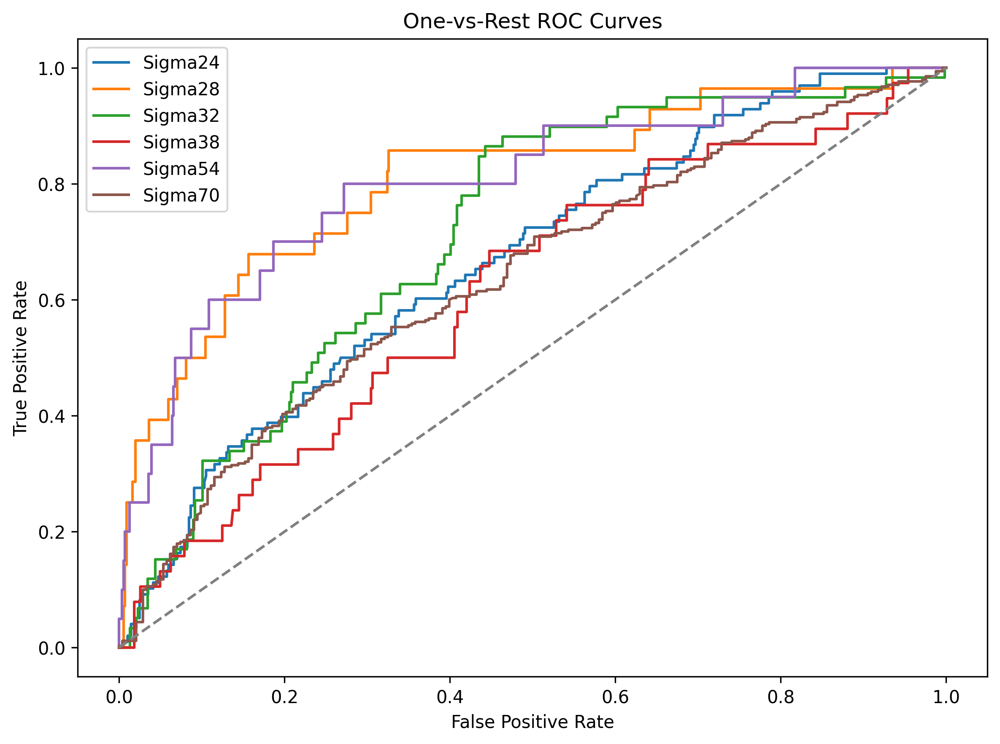
Calibration and conformal reliability
| Model | ECE before → after | 90% coverage / set size | 95% coverage / set size |
|---|---|---|---|
| Binary CNN | 0.0292 → 0.0320 | 0.8905 / 1.25 | 0.9521 / 1.54 |
| Selected sigma CNN | 0.0793 → 0.0802 | 0.9280 / 3.70 | 0.9520 / 4.16 |
Temperature scaling did not improve ECE for these CNN runs. Sigma coverage is achieved with large sets—about four of six labels on average—so coverage must be read with efficiency.
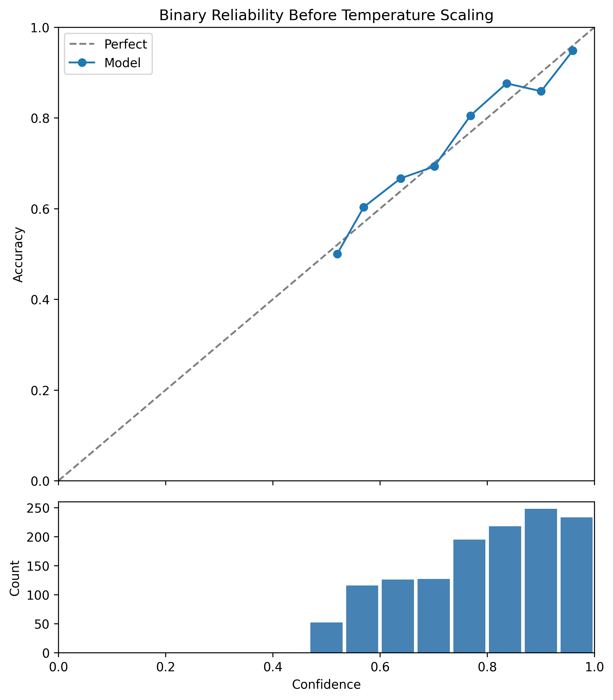
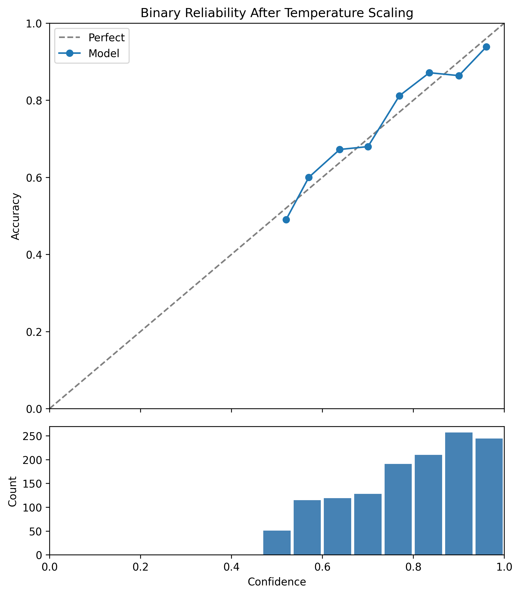
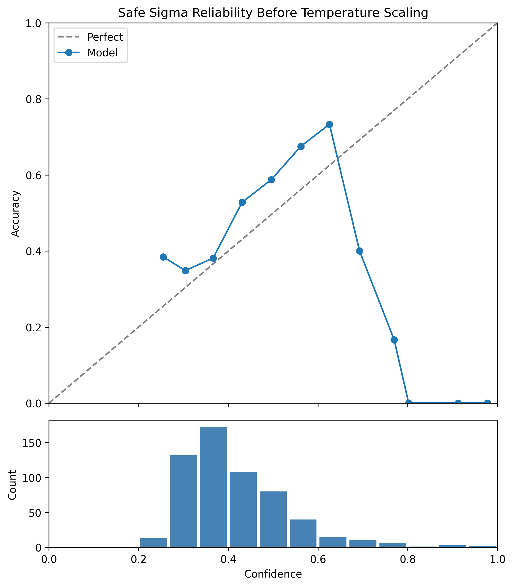
Uncertainty, stability, and biological errors
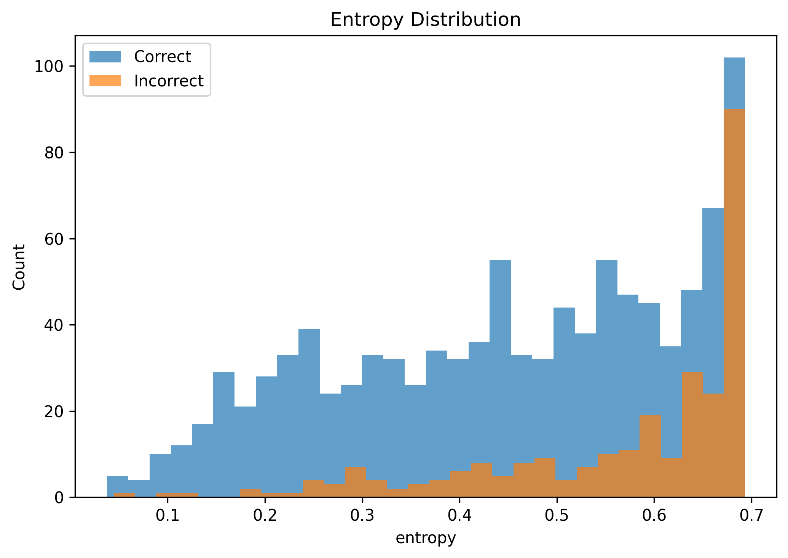
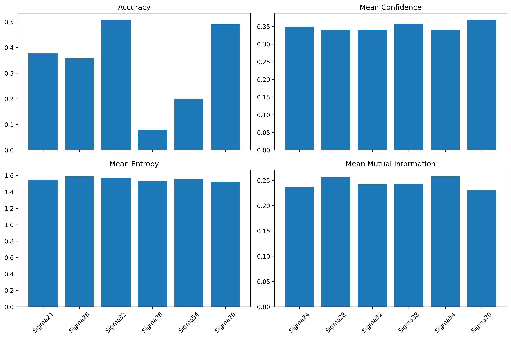
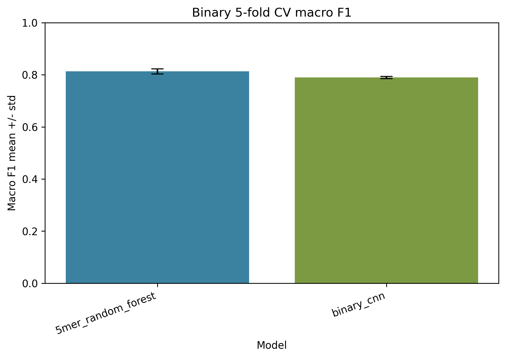
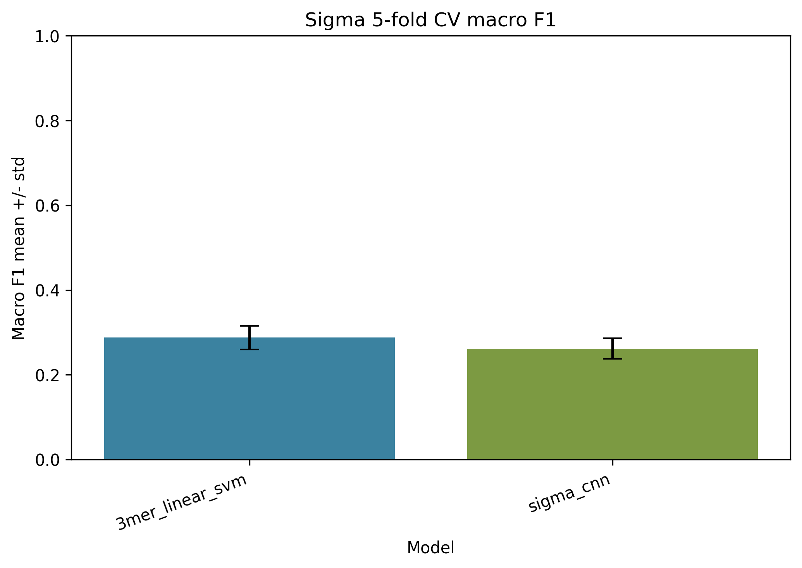
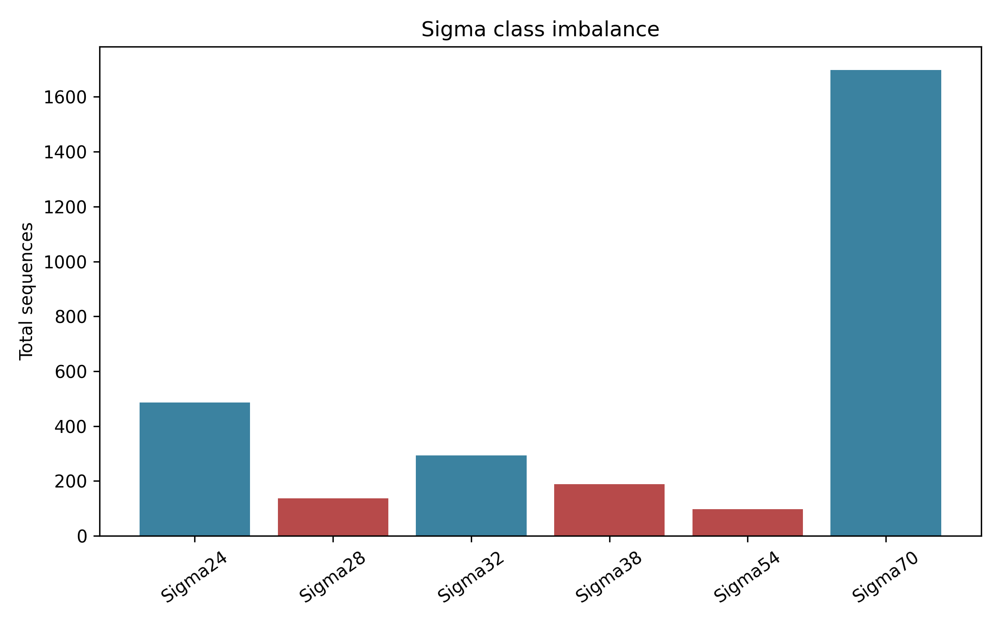
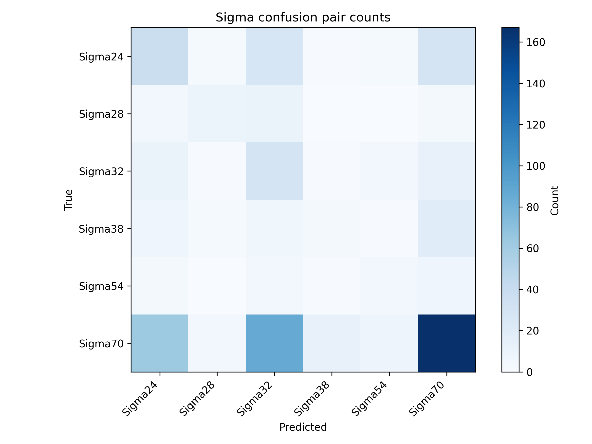
Binary CV macro F1 was 0.8130 ± 0.0101 for the 5-mer random forest and 0.7894 ± 0.0042 for the CNN. Sigma values were 0.2876 ± 0.0276 for the 3-mer SVM and 0.2620 ± 0.0241 for the CNN. Sigma70 has the strongest class F1 (0.603), while Sigma38 is the hardest (0.080).
Download: held-out metrics, reliability, CV summary, and class diagnostics.